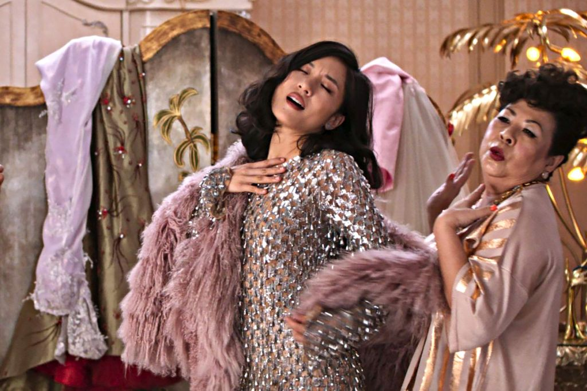
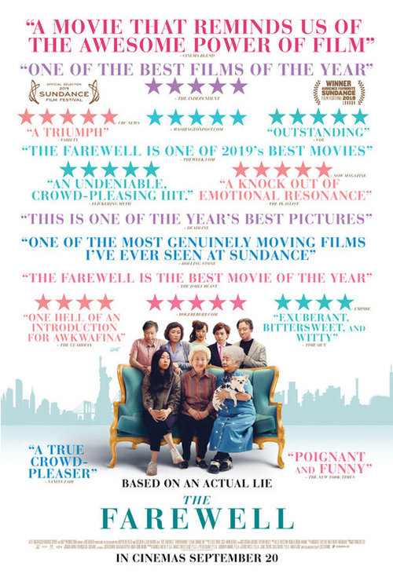
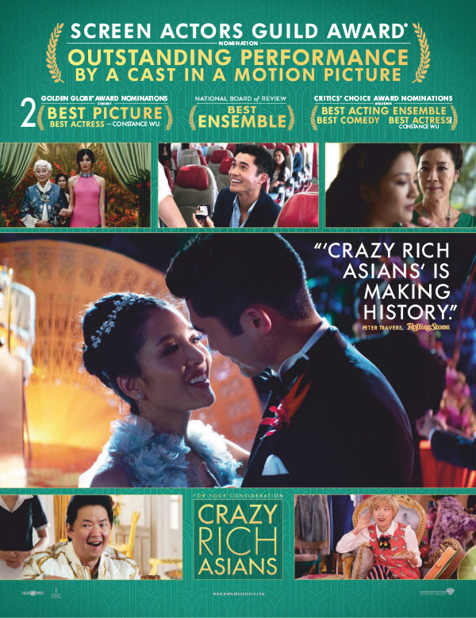

A Discussion on Visual Culture
Asian Representation in Media
This is an interview with Kayla Areglado, a student at The New School studying Culture and Media, on her thoughts about the underrepresentation of asians in the film industry and the portrayal of asians in film/media. This zine covers her
general thoughts on foreign films, then dives into questions following the recent 2018 release of Crazy Rich Asians. Topics include the following:
Portrayal of asians in film/media, when they are not being pinned as the stereotypical math genius.
How asians were represented then versus now, and this touches upon standards of what casting directors look for in actors/actresses. And overall,
asian recognition in the film industry, as well as the increasing recognition of foreign filmmakers and directors.
Interview by Allison Yick
General Thoughts
Thoughts on Parasite’s clean sweep at the Oscars this year, winning Best Picture, Best Directing, Best International Feature Film, and Best Original Screenplay?
I’m so glad that Parasite was able to achieve everything it has so far. Aside from being a Korean/Asian film, I think Parasite’s achievements are a feat because the film itself requires audiences to look at every little detail and thought that was put into it. The plot that Parasite has is one that is hard to bring onto the screen without making it look like your typical thriller film. Instead of using straightforward/conventional ways to narrate the plot, the direction of the film makes use of even the smallest nuances in order to tie the story together, which is hard to do successfully especially knowing that not everyone looks out for these details in films.
Question – I
General Thoughts
Do you think there is a difference between the way western films are written versus foreign films?
(i.e. in the concept of their films, cinematography, etc.)
When it comes down to it, I don’t think there’s a difference between how Western films are written when compared to foreign films. No film can escape having to incorporate a normative plot or narrative element. The difference between the Western film industry versus other industries is that when it comes to being “internationally recognized”, the former is gets produced knowing it is already part of a bigger, more dominant genre/industry, while the latter gets produced knowing that in order to be recognized, it still has to become a “breakthrough” film despite being successful within their own region. This way of thinking obviously changes the plots are executed into film in different regions. When foreign films are presented to the Western audience, one of the most prominent responses is that seeing a foreign plot is a unique and interesting perspective. All plots and all stories from all over the world are interesting and unique, it’s just that some plots (aka the mainstream Western film industry’s) have been normalized and idealized.
Question – II
Portrayal of Asians in Film/Media
In an interview with TIME, Awkwafina discusses the representation of asians in films, oftentime not relating to their actual experiences, but rather servicing white stories or leaning on stereotypes. What do you think was the goal in writing this story or producing the film for Crazy Rich Asians?
Crazy Rich Asians revolves around a hyper-specific group of people, so it by no means has the goal of representing Asians. The story revolves around people who live in their own world—Kwan describes them* as being “richer than god”—so I think the goal is simply to bring the stories of these people and link it back to everyone else’s world or the “real world”.
Another thing Crazy Rich Asians does is that it shows off successful (East) Asians in different industries. In Asia, entrepreneurs and tycoons are held in high regard, and more often than not, they are household names. Every region has them, but Western names always seem to be held at an even higher regard than others. Crazy Rich Asians puts these Asian names into an even higher pedestal and regards the success of Asian names.
Question – I
Portrayal of Asians in Film/Media
How do you think Kevin Kwan, the author of the book Crazy Rich Asians, wanted Asians to be seen/portrayed?
I don’t think Kwan intended to portray Asians in a specific way, since he wrote about this super-specific group of people. I think Kwan just wanted to show that Asians can be just as, or even more, successful than their Western counterparts, and that it is a matter of who is being recognized and who isn’t.
Have you read the book Crazy Rich Asians? If yes, did the director convey the story the way you imagined?
I did read the book, and it was brought into film in the way I expected. While reading the book, I imagined this surreal world for the extremely rich that is pretty much entirely separate from how the rest of Asia/the world lives, and the movie definitely was able to capture that.
Question – II
Question – III

Then VS. Now
How are asians represented in film now versus in the past? (i.e. take the casting of Scarlett Johansson for the lead in Ghost in the Shell as an example)
There has definitely been more of a push to represent and cast Asians in mainstream films. I think that one of the things that made it difficult before was that it was much more difficult to find actors who can play these roles. With the way media is structured and integrated into culture/society today, there are a lot more resources to help find the right people for specific roles. With films like Ghost in the Shell, where they take an Asian character and story to bring into the Western film industry, I think it’s more of a result of having to cater to a particular audience in a particular region. Nowadays, part of the default nature of films and other forms of mainstream media is that they are to be seen and accessed from all over the world, which pushed the movement to properly represent minorities even further. However, while there has been more of a movement to bring Asians into the mainstream film industry, there is still the issue of only representing a specific “type” of Asian. As someone who is from the Philippines, and therefore Asian, I often think about the fact that when people think of “Asians”, they think about light-skinned, small eyed, Asians, which basically only describes East Asians.
Question – I
Then VS. Now
Kevin Kwan mentioned in an interview that back in 2013, a producer approached him on casting a white woman for the role of Rachel Chu. Do you think that whitewashing in the film industry has gotten better since then or is this still a huge part of Hollywood’s mindset?
It has definitely gotten better, but I still think that whitewashing in the Western film industry is still a prevalent issue. While there are less cases of whitewashing recently, I have definitely seen that Western audiences themselves can still show ignorance towards Asian cast members, either by still saying that there is no need to cast Asians, or by discrediting their work in a Hollywood setting. Hollywood wants to satisfy their audience, and if the audience asks for whitewashing, then they will be more in favor of doing so. When it comes to reboots of Asian movies (ex. Ghost in the Shell anime vs live-action, Shutter 2004 vs Hollywood 2008)*, whitewashing and the erasure of certain key elements that are particular to the original is part of the transition and adaptation to the American audience, and I don’t think that will change unless the audience changes their mindset as well.
Question – II
Then VS. Now
Does this underrepresentation have to do with beauty standards or “not having the right image” – what is the right image?
The representation of Asians in films changes the image of Asians both in the Western film industry and in Asia. Because of how Asians have been represented in the past, we are oftentimes associated with being the “model minority”, but at the same time, the West’s image of Asians mostly encompasses only East Asians. The existence of the “right” image of Asians is a result of the industry that falsely represents Asians to begin with. I think that the underrepresentation as well as the existence of the “right image” of Asians (or any racial minority) in the Western film industry is heavily influenced by the systems of racial hierarchy that have been embedded into society in the past.
Question – III
Recognition in the Industry
Kevin Kwan was very adamant on casting all asians, what’s your take the criticism received from casting Henry Golding for the lead, who is half-british?
I definitely see why there was a lot of backlash because of how Golding is Eurasian, but I also think that that kind of criticism (which focuses on the fact that he’s half-British) discredits and ignores his Asian heritage as well.
Question – I
Recognition in the Industry
Why do you think it’s taken so long for asians or other minorities to receive recognition for their work?
As I mentioned in one of my previous answers, I think one of the key factors that comes into play in this issue is the established system of racial/social hierarchy in Western industries. This kind of hierarchy can even be traced back to centuries ago in imperialist endeavors. The history of “what-holds-dominance-over-what” has just become so established that so many of the cultural norms and standards being practiced today hold true to that. These hierarchies come with specific plots and characters assigned to different groups of people, which is why the work of minorities keep getting discredited and even erased in different industries.
Question – II

